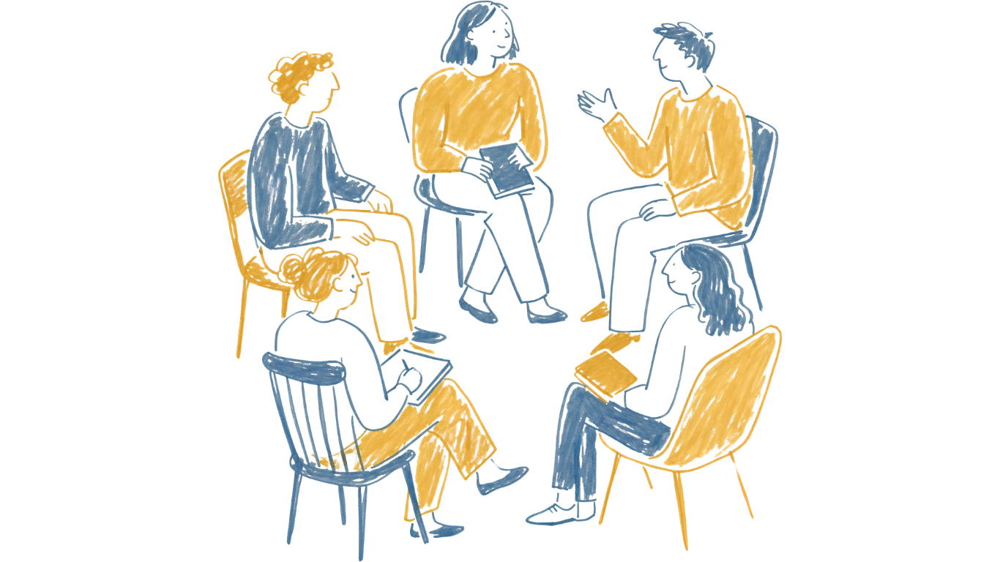

關於緩步學苑 Buffer Academy
我們注意到，許多人在面對飛速發展的 AI 工具與繁雜的職場技能時，心裡產生的不是興奮，而是深深的數位焦慮與被淘汰的恐懼。
緩步學苑成立的初衷，就是想打造一個「沒有狼性文化、沒有倒數計時推銷」的安全學習場域。我們陪你一步步把技能帶回家，把焦慮放下來。
專為職場上班族打造的無壓學習場。不教生硬理論，只給複製貼上就能用的實務模组，隨時有人為你溫柔解答。
領取免費降躁體驗包 ▷
把重複的工作自動化，把寶貴的時間還給質感生活
我們注意到，許多人在面對飛速發展的 AI 工具與繁雜的職場技能時，心裡產生的不是興奮，而是深深的數位焦慮與被淘汰的恐懼。
緩步學苑成立的初衷，就是想打造一個「沒有狼性文化、沒有倒數計時推銷」的安全學習場域。我們陪你一步步把技能帶回家，把焦慮放下來。